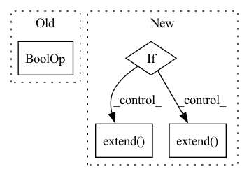

Pattern ID :31042
Before Change
if args.moe:
model = MOE(args)
else:
if args.features_only or args.more_ffn_capacity :
ffn = [
nn.Dropout(args.ffn_input_dropout),
nn.Linear(first_linear_dim, args.ffn_hidden_dim),After Change
first_linear_dim += args.features_dim
// Create FFN layers
if args.ffn_num_layers == 1:
ffn = [
nn.Dropout(args.ffn_input_dropout),
nn.Linear(first_linear_dim, output_size)
]
else:
ffn = [
nn.Dropout(args.ffn_input_dropout),
nn.Linear(first_linear_dim, args.ffn_hidden_dim)
]
for _ in range(args.ffn_num_layers - 2):
ffn.extend( [
get_activation_function(args.activation),
nn.Dropout(args.ffn_dropout),
nn.Linear(args.ffn_hidden_dim, args.ffn_hidden_dim),
])
ffn.extend( [
get_activation_function(args.activation),
nn.Dropout(args.ffn_dropout),
nn.Linear(args.ffn_hidden_dim, output_size),
])
// Classification
if args.dataset_type == "classification":
ffn.append(nn.Sigmoid())In pattern: SUPERPATTERN
Frequency: 3
Non-data size: 4
Instances Fragment ID: 91146638
Project Name: aamini/chemprop
Commit Name: c2a68dc5b795bc2858840f51addd6012373ab5d8
Time: 2018-10-29
Author: swansonk.14@gmail.com
File Name: model.py
M Class Name: AnonimousClass
N Class Name: AnonimousClass
M Method Name: build_model(1)
N Method Name: build_model(1)
M Parent Class:
N Parent Class:
M File Name: model.py
N File Name: model.py
M Start Line: 51
M End Line: 94
N Start Line: 44
N End Line: 93
Before Change
label = [label]
class_idx = label
for i in range(len(label)):
if self.classes_to_display is None or self._class_to_string(class_idx[i]) in self.classes_to_display :
valid_labels.append(orig_label)
valid_images.append(image)
breakAfter Change
valid_images = []
valid_labels = []
if self.classes_to_display is None:
valid_images.extend( batch.images)
valid_labels.extend( batch.labels)
else:
samples = batch.images, batch.labels, data.get_classes(batch.labels)
for image, label, classes in zip(*samples):
class_names = {self._class_to_string(c) for c in classes} Fragment ID: 91146639
Project Name: deepchecks/deepchecks
Commit Name: 8ff977cbb9806c109cb688bffcf1d6740a0971ff
Time: 2022-03-31
Author: matan@deepchecks.com
File Name: deepchecks/vision/checks/distribution/heatmap_comparison.py
M Class Name: HeatmapComparison
N Class Name: HeatmapComparison
M Method Name: _filter_images(3)
N Method Name: _filter_images(3)
M Parent Class: TrainTestCheck
N Parent Class: TrainTestCheck
M File Name: deepchecks/vision/checks/distribution/heatmap_comparison.py
N File Name: deepchecks/vision/checks/distribution/heatmap_comparison.py
M Start Line: 177
M End Line: 195
N Start Line: 176
N End Line: 193
Before Change
new_faces.extend(additional_faces)
self.wait_count += 1
if self.detected < self.max_faces:
if self.detected == 0 or self.wait_count >= self.scan_every :
start_fd = time.perf_counter()
gray = cv2.cvtColor(frame, cv2.COLOR_BGR2GRAY)
new_faces.extend(list(self.faceCascade.detectMultiScale(gray, 1.3, 4, 0 | cv2.CASCADE_SCALE_IMAGE, (50, 50))))After Change
new_faces.extend(self.faces)
new_faces.extend(additional_faces)
self.wait_count += 1
if self.detected == 0:
start_fd = time.perf_counter()
new_faces.extend( self.retinaface.detect_retina(frame))
duration_fd = 1000 * (time.perf_counter() - start_fd)
self.wait_count = 0
elif self.detected < self.max_faces:
if self.use_retinaface > 0:
new_faces.extend( self.retinaface_slow.get_results())
if self.wait_count >= self.scan_every:
if self.use_retinaface > 0:
self.retinaface_slow.background_detect(frame)
else: Fragment ID: 91146637
Project Name: emilianavt/openseeface
Commit Name: cd9cfd9ee8aab674bcdf71a20959568ff09257e8
Time: 2020-02-25
Author: 38952746+emilianavt@users.noreply.github.com
File Name: tracker.py
M Class Name: Tracker
N Class Name: Tracker
M Method Name: predict(3)
N Method Name: predict(3)
M Parent Class:
N Parent Class:
M File Name: tracker.py
N File Name: tracker.py
M Start Line: 667
M End Line: 677
N Start Line: 668
N End Line: 692